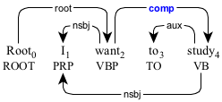
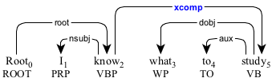
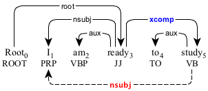
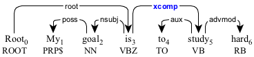
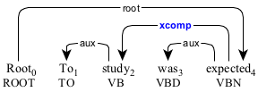
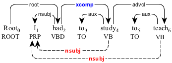

xcomp : open clausal complement
Primary
An open clausal complement (xcomp) is a clause in the object position that does not contain the surface subject.

The infinitive clause "to study" modifying the predicate "want".
The infinitive clause "to study" modifying the predicate "want".

The relative clause "what to study" modifying the predicate "want".
The relative clause "what to study" modifying the predicate "want".
The open clausal complement can modify a non-verbal predicate.

The open clausal complement "to study" modifying the adjectival predicate "ready".
The open clausal complement "to study" modifying the adjectival predicate "ready".

The open clausal complement "to study" modifying the adverbial predicate "soon".
The copula becomes the head of the open clausal complement (see copula for more details).

The open clausal complement "to study hard" modifying the copula "is".
The open clausal complement "to study hard" modifying the copula "is".
In a passive construction, the open clausal complement comes before the predicate.

An open clausal complement in the passive construction.
An open clausal complement in the passive construction.
Secondary
When the subject of the open clausal complement is known, it is represented by the secondary dependency.

The nominal subject "I" modifying "study" in the open clause and "teach" in the adverbial clause (
The nominal subject "I" modifying "study" in the open clause and "teach" in the adverbial clause (
advcl).